# calculate the optimal growth of PNA
import numpy as np
import matplotlib.pyplot as plt
from sklearn.decomposition import PCA
from netCDF4 import Dataset as NetCDFFile
import pandas as pd
date = pd.date_range('1979-01-01','2021-12-31', freq='1D')
nc = NetCDFFile('/Volumes/Expansion/DATA/Reanalysis/ERA5/z/z250_10anomaly.nc') # load low-pass filtered data
lat = nc.variables['lat'][:]
lon = nc.variables['lon'][:]
xx,yy = np.meshgrid(lon,lat)
lat_lim = np.array([20, 80]) # [10, 70]
lon_lim = np.array([100, 300]) # [90, 260]
posi_lat = np.squeeze(np.where((lat>=lat_lim[0]) & (lat<=lat_lim[1]))) # 10N - 70N
posi_lon = np.squeeze(np.where((lon>=lon_lim[0]) & (lon<=lon_lim[1]))) # 90E - 120W
z = np.zeros((len(date),3,len(posi_lat),len(posi_lon)))
z[:,0,:,:] = nc.variables['z'][:,posi_lat[0]:posi_lat[-1]+1,posi_lon[0]:posi_lon[-1]+1]
nc = NetCDFFile('/Volumes/Expansion/DATA/Reanalysis/ERA5/z/z500_10anomaly.nc') # load low-pass filtered data
z[:,1,:,:] = nc.variables['z'][:,posi_lat[0]:posi_lat[-1]+1,posi_lon[0]:posi_lon[-1]+1]
nc = NetCDFFile('/Volumes/Expansion/DATA/Reanalysis/ERA5/z/z850_10anomaly.nc') # load low-pass filtered data
z[:,2,:,:] = nc.variables['z'][:,posi_lat[0]:posi_lat[-1]+1,posi_lon[0]:posi_lon[-1]+1]
# load PNA index
#del PNA_index
file = '/Volumes/Expansion/User_backup/Kai-Chih_Tseng/Chaos_and_Predictability/norm.daily.pna.index.b500101.current.ascii'
f = open(file, 'r')
Lines = f.readlines()
count = 0
PNA_index = np.zeros((1,1))
for line in Lines:
PNA_index = np.append(PNA_index, line.split()[-1])
count += 1
date = pd.date_range('1950-01-01','2021-12-31', freq='1D')
posi = np.squeeze(np.where((date.year>=1979)&(date.year<=2021)))
PNA_index = PNA_index[posi[0]:posi[-1]+1]
posi = np.squeeze(np.where(PNA_index=='26*******'))
PNA_index = np.array(PNA_index)
for i in range(len(posi)):
PNA_index[posi[i]] = (PNA_index[posi[i]-1].astype(float)+PNA_index[posi[i]+1].astype(float))/2
PNA_index = np.reshape(PNA_index,[len(PNA_index),1]).astype(float)
---------------------------------------------------------------------------
ImportError Traceback (most recent call last)
File /Users/Shared/miniconda3/envs/jupyterbook/lib/python3.9/site-packages/numpy/_core/__init__.py:23
22 try:
---> 23 from . import multiarray
24 except ImportError as exc:
File /Users/Shared/miniconda3/envs/jupyterbook/lib/python3.9/site-packages/numpy/_core/multiarray.py:10
9 import functools
---> 10 from . import overrides
11 from . import _multiarray_umath
File /Users/Shared/miniconda3/envs/jupyterbook/lib/python3.9/site-packages/numpy/_core/overrides.py:8
7 from .._utils._inspect import getargspec
----> 8 from numpy._core._multiarray_umath import (
9 add_docstring, _get_implementing_args, _ArrayFunctionDispatcher)
12 ARRAY_FUNCTIONS = set()
ImportError: dlopen(/Users/Shared/miniconda3/envs/jupyterbook/lib/python3.9/site-packages/numpy/_core/_multiarray_umath.cpython-39-darwin.so, 0x0002): Library not loaded: @rpath/libgfortran.5.dylib
Referenced from: <CAA510D4-816A-34E5-9021-485EF5D56159> /Users/Shared/miniconda3/envs/jupyterbook/lib/libopenblas.0.dylib
Reason: tried: '/Users/Shared/miniconda3/envs/jupyterbook/lib/libgfortran.5.dylib' (duplicate LC_RPATH '@loader_path'), '/Users/Shared/miniconda3/envs/jupyterbook/lib/libgfortran.5.dylib' (duplicate LC_RPATH '@loader_path'), '/Users/Shared/miniconda3/envs/jupyterbook/lib/python3.9/site-packages/numpy/_core/../../../../libgfortran.5.dylib' (duplicate LC_RPATH '@loader_path'), '/Users/Shared/miniconda3/envs/jupyterbook/lib/python3.9/site-packages/numpy/_core/../../../../libgfortran.5.dylib' (duplicate LC_RPATH '@loader_path'), '/Users/Shared/miniconda3/envs/jupyterbook/bin/../lib/libgfortran.5.dylib' (duplicate LC_RPATH '@loader_path'), '/Users/Shared/miniconda3/envs/jupyterbook/bin/../lib/libgfortran.5.dylib' (duplicate LC_RPATH '@loader_path'), '/usr/local/lib/libgfortran.5.dylib' (no such file), '/usr/lib/libgfortran.5.dylib' (no such file, not in dyld cache)
During handling of the above exception, another exception occurred:
ImportError Traceback (most recent call last)
File /Users/Shared/miniconda3/envs/jupyterbook/lib/python3.9/site-packages/numpy/__init__.py:114
113 try:
--> 114 from numpy.__config__ import show as show_config
115 except ImportError as e:
File /Users/Shared/miniconda3/envs/jupyterbook/lib/python3.9/site-packages/numpy/__config__.py:4
3 from enum import Enum
----> 4 from numpy._core._multiarray_umath import (
5 __cpu_features__,
6 __cpu_baseline__,
7 __cpu_dispatch__,
8 )
10 __all__ = ["show"]
File /Users/Shared/miniconda3/envs/jupyterbook/lib/python3.9/site-packages/numpy/_core/__init__.py:49
26 msg = """
27
28 IMPORTANT: PLEASE READ THIS FOR ADVICE ON HOW TO SOLVE THIS ISSUE!
(...)
47 """ % (sys.version_info[0], sys.version_info[1], sys.executable,
48 __version__, exc)
---> 49 raise ImportError(msg)
50 finally:
ImportError:
IMPORTANT: PLEASE READ THIS FOR ADVICE ON HOW TO SOLVE THIS ISSUE!
Importing the numpy C-extensions failed. This error can happen for
many reasons, often due to issues with your setup or how NumPy was
installed.
We have compiled some common reasons and troubleshooting tips at:
https://numpy.org/devdocs/user/troubleshooting-importerror.html
Please note and check the following:
* The Python version is: Python3.9 from "/Users/Shared/miniconda3/envs/jupyterbook/bin/python"
* The NumPy version is: "2.0.2"
and make sure that they are the versions you expect.
Please carefully study the documentation linked above for further help.
Original error was: dlopen(/Users/Shared/miniconda3/envs/jupyterbook/lib/python3.9/site-packages/numpy/_core/_multiarray_umath.cpython-39-darwin.so, 0x0002): Library not loaded: @rpath/libgfortran.5.dylib
Referenced from: <CAA510D4-816A-34E5-9021-485EF5D56159> /Users/Shared/miniconda3/envs/jupyterbook/lib/libopenblas.0.dylib
Reason: tried: '/Users/Shared/miniconda3/envs/jupyterbook/lib/libgfortran.5.dylib' (duplicate LC_RPATH '@loader_path'), '/Users/Shared/miniconda3/envs/jupyterbook/lib/libgfortran.5.dylib' (duplicate LC_RPATH '@loader_path'), '/Users/Shared/miniconda3/envs/jupyterbook/lib/python3.9/site-packages/numpy/_core/../../../../libgfortran.5.dylib' (duplicate LC_RPATH '@loader_path'), '/Users/Shared/miniconda3/envs/jupyterbook/lib/python3.9/site-packages/numpy/_core/../../../../libgfortran.5.dylib' (duplicate LC_RPATH '@loader_path'), '/Users/Shared/miniconda3/envs/jupyterbook/bin/../lib/libgfortran.5.dylib' (duplicate LC_RPATH '@loader_path'), '/Users/Shared/miniconda3/envs/jupyterbook/bin/../lib/libgfortran.5.dylib' (duplicate LC_RPATH '@loader_path'), '/usr/local/lib/libgfortran.5.dylib' (no such file), '/usr/lib/libgfortran.5.dylib' (no such file, not in dyld cache)
The above exception was the direct cause of the following exception:
ImportError Traceback (most recent call last)
Cell In[1], line 3
1 # calculate the optimal growth of PNA
----> 3 import numpy as np
4 import matplotlib.pyplot as plt
5 from sklearn.decomposition import PCA
File /Users/Shared/miniconda3/envs/jupyterbook/lib/python3.9/site-packages/numpy/__init__.py:119
115 except ImportError as e:
116 msg = """Error importing numpy: you should not try to import numpy from
117 its source directory; please exit the numpy source tree, and relaunch
118 your python interpreter from there."""
--> 119 raise ImportError(msg) from e
121 from . import _core
122 from ._core import (
123 False_, ScalarType, True_, _get_promotion_state, _no_nep50_warning,
124 _set_promotion_state, abs, absolute, acos, acosh, add, all, allclose,
(...)
169 where, zeros, zeros_like
170 )
ImportError: Error importing numpy: you should not try to import numpy from
its source directory; please exit the numpy source tree, and relaunch
your python interpreter from there.
# using regression to find PNA pattern
ntime = z.shape[0]
nlev = z.shape[1]
nlat = z.shape[2]
nlon = z.shape[3]
z_tmp = np.reshape(z,[ntime,nlev,nlat*nlon])
PNA_pattern = np.zeros((nlev,nlat,nlon))
for level in range(nlev):
tmp = np.linalg.inv(PNA_index.T.dot(PNA_index)).dot(PNA_index.T.dot(z_tmp[:,level,:]))
PNA_pattern[level,:,:] = np.reshape(tmp,[nlat,nlon])
plt.figure()
cs=plt.contourf(PNA_pattern[0,:,:])
plt.contour(PNA_pattern[2,:,:])
plt.colorbar(cs)
<matplotlib.colorbar.Colorbar at 0x168978880>
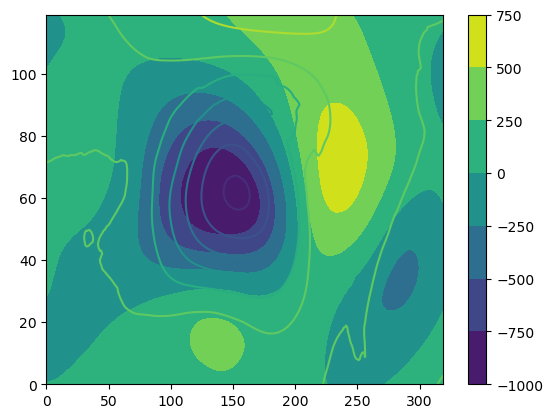
f = open("/Volumes/Expansion/DATA/Reanalysis/Tensor_flow_turtorial/lat.bin", "r")
costal_lat = np.fromfile(f, np.float32)
f = open("/Volumes/Expansion/DATA/Reanalysis/Tensor_flow_turtorial/lon.bin", "r")
costal_lon = np.fromfile(f, np.float32)
lat_lim = np.array([20, 80]) # [10, 70]
lon_lim = np.array([100, 300]) # [90, 260]
posi_lat = np.squeeze(np.where((lat>=lat_lim[0]) & (lat<=lat_lim[1])))
posi_lon = np.squeeze(np.where((lon>=lon_lim[0]) & (lon<=lon_lim[1])))
xv,yv = np.meshgrid(lon[posi_lon],lat[posi_lat])
plt.figure()
plt.plot(costal_lon,costal_lat)
cs=plt.contourf(xv,yv,PNA_pattern[0,:,:])
plt.colorbar(cs)
<matplotlib.colorbar.Colorbar at 0x168f01940>
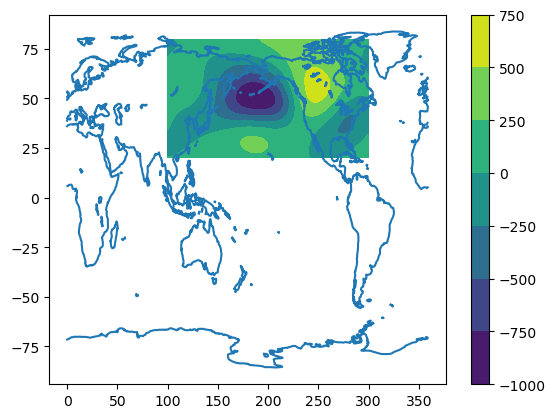
modes = 50
weight = np.cos(yv/180*np.pi)
pcs = np.zeros((modes,ntime))
EOF = np.zeros((modes,nlev,nlat,nlon))
z_weight = z.copy()
z_weight = np.power(weight,0.5)*z_weight
z_weight = np.reshape(z_weight,[ntime,nlev*nlat*nlon])
from sklearn.decomposition import PCA
pca = PCA(n_components=modes)
pca.fit(z_weight)
pcs = np.dot(pca.components_,z_weight.T)
diag = np.zeros((modes, modes))
np.fill_diagonal(diag, pcs.std(axis=1))
pcs = np.dot(np.linalg.inv(diag),pcs) # normalize (/STD(pcs)) --> dimensionless
EOF = diag.dot(pca.components_) # (*STD(pcs)) --> has unit
EOF = np.reshape(pca.components_,[modes,nlev,nlat,nlon])
lat_lim = np.array([20, 80]) # [10, 70]
lon_lim = np.array([100, 300]) # [90, 260]
posi_lat = np.squeeze(np.where((lat>=lat_lim[0]) & (lat<=lat_lim[1])))
posi_lon = np.squeeze(np.where((lon>=lon_lim[0]) & (lon<=lon_lim[1])))
xv,yv = np.meshgrid(lon[posi_lon],lat[posi_lat])
fig=plt.figure()
plt.contourf(xv,yv,EOF[0,0,:,:])
plt.plot(costal_lon,costal_lat)
plt.xlim([100,300])
plt.ylim([20,80])
fig.set_size_inches(8.5, 3.5)
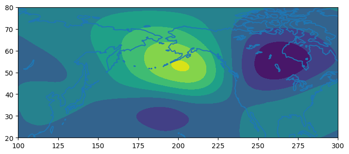
date = pd.date_range('1979-01-01','2021-12-31', freq='1D')
posi_winter = np.squeeze((np.where((date.month >=10 )|(date.month <=2 ))))
pcs = np.reshape(pcs,[modes,ntime])
date = pd.date_range('1979-01-01','2021-12-31', freq='1D')
posi_winter = np.squeeze((np.where((date.month >=10 )|(date.month <=2 ))))
lag = 100
G = np.zeros((lag,modes,modes))
for tau in range(0, lag):
b = pcs[:,posi_winter-tau]
c = pcs[:,posi_winter]
C_0 = b.dot(b.T)
C_tau = c.dot(b.T)
inv_C_0 = np.linalg.inv(C_0)
G[tau,:,:] = C_tau.dot(inv_C_0)
plt.plot(tau, G[tau,1,1], color='green', linestyle='solid', linewidth = 3,
marker='o')
plt.show()
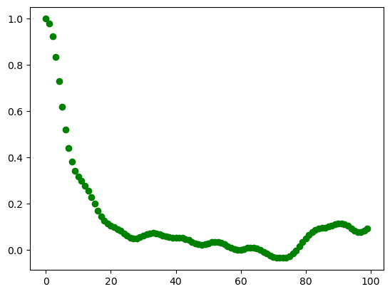
r = np.zeros((modes,modes))
for i in np.arange(modes):
r[i,i] = np.corrcoef(np.squeeze(pcs[i,posi_winter]),np.squeeze(PNA_index[posi_winter]))[0][1]
from scipy.linalg import logm, expm
optimal_growth = np.zeros((lag,))
optimal_growth2 = np.zeros((lag,))
tau = 1
G_tmp_original = G[tau,:,:]
B = logm(G_tmp_original)/tau
G_tmp_original1 = expm(B)
lag = 100
eig_vect = np.zeros((lag,modes,modes))
for i in range(lag):
GTG = np.linalg.matrix_power(G_tmp_original,i).T.dot(r.T.dot(r)).dot(np.linalg.matrix_power(G_tmp_original,i))
eig_val,eig_vect[i,:,:] = np.linalg.eig(GTG)
optimal_growth[i,] = np.max(eig_val)
plt.plot(optimal_growth)
#plt.plot(optimal_growth2)
plt.xlim([0,40])
np.where(optimal_growth==np.max(optimal_growth))
#plt.ylim([0,1000])
(array([6]),)
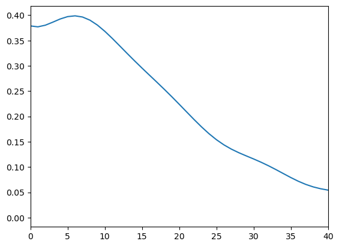
lat_lim = np.array([20, 80]) # [10, 70]
lon_lim = np.array([100, 300]) # [90, 260]
posi_lat = np.squeeze(np.where((lat>=lat_lim[0]) & (lat<=lat_lim[1])))
posi_lon = np.squeeze(np.where((lon>=lon_lim[0]) & (lon<=lon_lim[1])))
xv,yv = np.meshgrid(lon[posi_lon],lat[posi_lat])
predict_0 = np.reshape(eig_vect[0,:,0],[1,modes]).dot(np.reshape(EOF,[modes,3*120*320]))
predict_0 = np.reshape(predict_0,[3,120,320])
for i in range(0,10):
predict = np.reshape(np.linalg.matrix_power(G_tmp_original,i).dot(eig_vect[1,:,0]),[1,modes]).dot(np.reshape(EOF,[modes,3*120*320]))
predict = np.reshape(predict,[3,120,320])
fig = plt.figure()
cs=plt.contourf(xv,yv,-predict[0,:,:],levels = np.arange(-0.02,0.025,0.005),extend='both')
print(np.min(predict))
plt.plot(costal_lon,costal_lat)
plt.colorbar(cs)
plt.xlim([100,300])
plt.ylim([20,80])
fig.set_size_inches(10.5, 3.5)
-0.007449058616067262
-0.00835862570386659
-0.009074881116643849
-0.009623554041291558
-0.009993682396267356
-0.010204754386189095
-0.010314614546019915
-0.010246910171507036
-0.009947944349013662
-0.009426430130717561
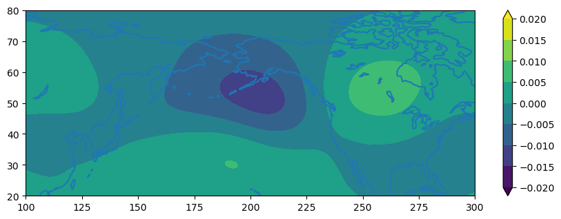
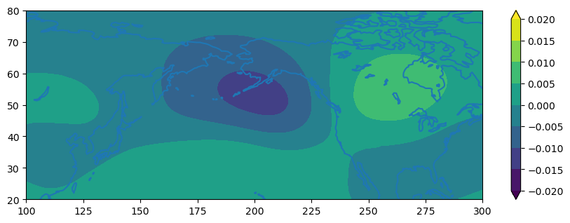
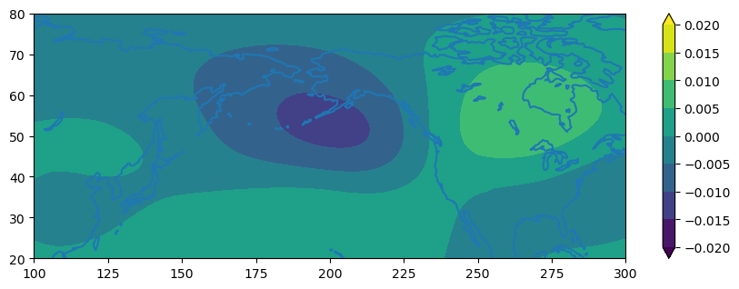
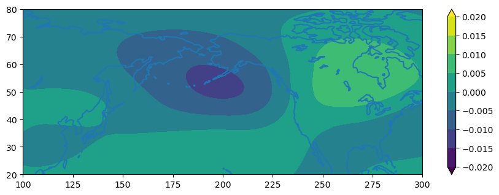
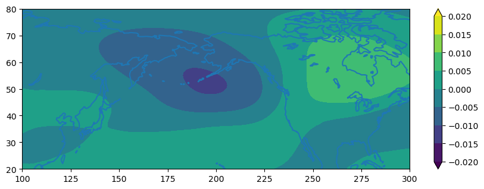
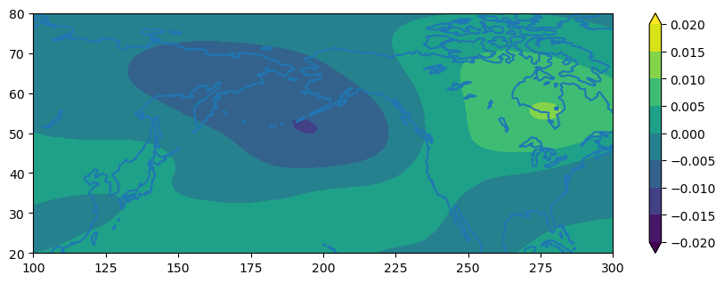
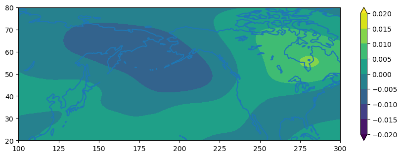
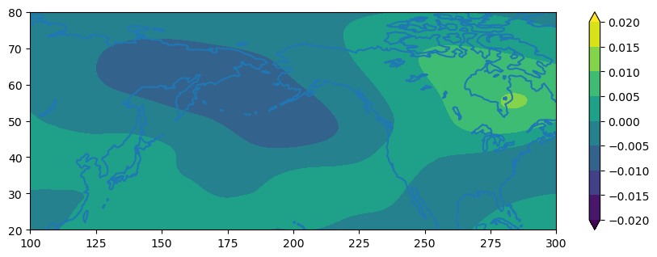
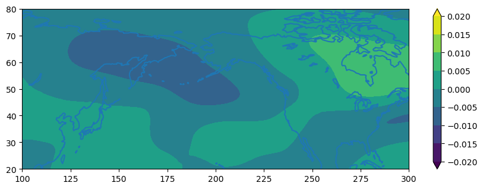
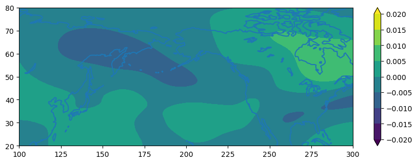